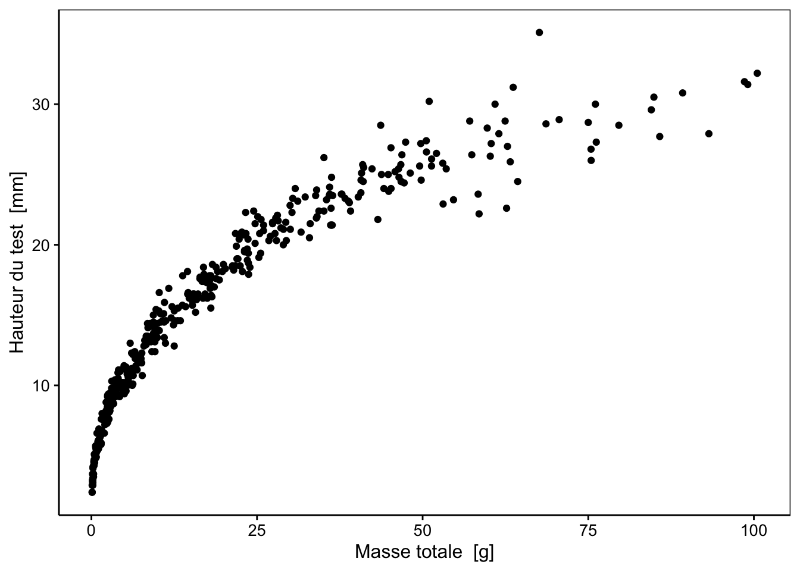

3.1 Nuage de points
Dès que vous vous sentez familiarisé avec les principes de base de R, vous allez pouvoir réaliser assez rapidement des beaux graphiques. Par exemple, si vous souhaitez représenter une variable numérique en fonction d’une autre variable numérique, vous pouvez exprimer cela sous la forme d’une formule2
\[y \sim x\]
que l’on peut lire “y en fonction de x”. Pour les deux variables numériques x et y, la représentation graphique la plus classique est le nuage de points (voir Fig. 3.1 pour un exemple).

Figure 3.1: Exemple de graphique en nuage de points. Des éléments essentiels sont ici mis en évidence en couleurs (voir texte).
Les éléments indispensables à la compréhension d’un graphique en nuage de points sont mis en évidence à la Fig. 3.1 :
- Les axes avec les graduations (en rouge),
- les labels et les unités des axes (en bleu).
Les instructions dans R pour produire un tel nuage de point sont :
# Chargement de SciViews::R
SciViews::R
# Importation du jeu de données
urchin <- read("urchin_bio", package = "data.io", lang = "fr")
La fonction chart() n’est pas accessible dans R de base, mais l’extension chargée via l’instruction SciViews::R rend cette fonction disponible. Elle requiert comme argument le jeu de donnée (data = urchin, c’est un objet dataframe ou tibble dans le langage de R), ainsi que la formule à employer dans laquelle vous avez indiqué le nom des variables que vous voulez sur l’axe des ordonnées à gauche et des abscisses à droite de la formule, les deux membres étant séparés par un “tilde” (~). Vous voyez que le jeu de données contient beaucoup de variables (les titres des colonnes du tableau en sortie). Parmi toutes ces variables, nous avons choisi ici de représenter height en fonction de weight, la hauteur en fonction de la masse des oursins. Jusqu’ici, nous avons spécifié ce que nous voulons représenter, mais pas encore comment (sous quelle apparence), nous voulons les matérialiser sur le graphique. Pour un nuage de points, nous voulons les représenter sous forme de … points ! Donc, nous devons ajouter la fonction geom_point() pour indiquer cela.
3.1.1 Le nuage de points en vidéo
Vous trouverez une vidéo ci-dessous vous expliquant la création du nuage de points dans R sur ce jeu de données, en analysant d’autres variables.
Cette vidéo ne vous a montré que les principaux outils disponibles lors de la réalisation de graphiques. Soyez curieux et expérimentez par vous-même !
A vous de jouer
Entrée pour ouvrir le tutoriel concernant le nuage de points :
BioDataScience::run(“02c_nuage_de_points”)
N’oubliez pas d’appuyer sur la touche ESC pour reprendre la main dans R à la fin d’un tutoriel)
3.1.2 Echelles d’un graphiques
Vous devez être vigilant lors de la réalisation d’un nuage de point particulièrement sur l’étendue des valeurs présentées sur vos axes. Vous devez utilisez votre expertise de biologiste pour vous posez les deux questions suivantes :
Est ce que l’axe représente des valeurs plausibles de hauteurs et de masses de ces oursins appartenant à l’espèce Paracentrotus lividus ?
Quels est la précision des mesures effectuées ?
Dans certains cas, la forme du nuage de points peut être distendu par la présence de valeurs aberrantes. Ce n’est pas le cas ici, mais nous pouvons le simuler en distendant artificiellement soit l’axe X, soit l’axe Y, soit les deux :
Figure 3.2: Piège du nuage de points. A) graphique initial montrant la variation de la hauteur [mm] en fonction de la masse [g]. B) graphique A avec la modification de l’échelle de l’axe X. C) Graphique A avec une seconde modification de l’axe X. D) Graphique A avec modification simultanée des deux axes.
(la même application shiny, mais via knitr::include_app())
3.1.3 Transformation des données
Vous avez la possibilité d’appliquer une transformation de vos données (il est même conseillé de le faire) afin qu’elles soient plus facilement analysables. Par exemple, il est possible d’utiliser des fonctions de puissance, racines, logarithmes, exponentielles3 pour modifier l’apparence du nuage de points dans le but de le rendre plus linéaire (car il est plus facile d’analyser statistiquement des données qui s’alignent le long d’une droite). Par exemple, sur nos données de hauteurs et masses d’oursins, la transformation double-logarithmique (log(x) et log(Y)) fonctionne très bien pour rendre le nuage de points plus linéaire :
# Réalisation du graphique de la hauteur en fonction de la masse
a <- chart(urchin, height ~ weight) +
geom_point()
# Application du logarithme sur les deux variables représentées
b <- chart(urchin, log10(height) ~ log10(weight)) +
geom_point() +
labs(x = "log(Masse totale [g])", y = "log(Hauteur du test [mm])")
# Assemblage des graphiques
combine_charts(list(a, b))![A) Hauteur [mm] en fonction de la masse [g] d'oursins violets. B) Logarithme en base 10 de la hauteur [mm] en fonction du logarithme en base 10 de la masse [g] de ces mêmes oursins.](03-nuage-point_files/figure-html/unnamed-chunk-11-1.png)
Figure 3.3: A) Hauteur [mm] en fonction de la masse [g] d’oursins violets. B) Logarithme en base 10 de la hauteur [mm] en fonction du logarithme en base 10 de la masse [g] de ces mêmes oursins.
Pièges et astuces
RStudio permet de récupérer rapidement des instructions à partir d’une banque de solutions toutes prêtes. Cela s’appelle des snippets. Vous avez une série de snippets disponibles dans la SciViews Box. Celui qui vous permet de réaliser un graphique en nuage de points s’appelle .cbxy (pour chart -> bivariate -> xy-plot). Entrez ce code et appuyez ensuite sur la tabulation dans un script R, et vous verrez le code remplacé par ceci dans la fenêtre d’édition :
chart(data = DF, YNUM ~ XNUM) +
geom_point()Vous avez à votre disposition un ensemble de snippets que vous pouvez retrouver dans l’aide-mémoire consacré à SciViews. Vous avez également à votre disposition l’aide-mémoire sur la visualisation des données (Data Visualization Cheat Sheet) qui utilise la fonction ggplot() plutôt que chart() et une interface légèrement différente pour spécifier les variables à utiliser pour réaliser le graphique (aes(x = ..., y = ...)).
A vous de jouer
Une nouvelle tâche va vous être demandée ci-dessous en utilisant GitHub Classroom. Cette tâche est un travail individuel. Une fois votre assignation réalisée, faites un clone local de votre dépôt et placez-le dans le sous-dossier projects de votre dossier partagé avec la SciViews Box shared. Vous aurez alors un nouveau projet RStudio.
urchin_bio, explorez différents graphiques en nuages de points. Utilisez l’URL suivante pour accéder à votre tâche :
- https://classroom.github.com/a/eYrXLy_u
Inspirez-vous du script dans le dépôt sdd1_iris. Vous devez commencer par faire un “fork” du dépôt, puis un clone sur votre ordinateur en local pour pouvoir l’utiliser.
Prêtez une attention toute particulière à l’organisation d’un script R. En plus des instructions R, il contient aussi sous forme de commentaires, un titre , la date de la dernière mise à jour, le nom de l’auteur, et des sections qui organisent de façon claire le contenu du script. A ce sujet, vous trouverez des explications détaillées concernant l’utilisation des scripts R dans l’annexe.
Pour en savoir plus
Visualisation des données dans R for Data Science. Chapitre du livre portant sur la visualisation des données, en anglais.
ggplot2 nuage de point. Tutoriel en français portant sur l’utilisation d’un nuage de points avec le package
ggplot2et la fonctiongeom_point().Fundamentals of Data Visualization. Un livre en anglais sur les fondamentaux de la visualisation graphique.
R Graphics Cookbook - Chapter 5: Scatter Plots. Un chapitre d’un livre en anglais sur l’utilisation du nuage de points.
geom_point(). La fiche technique de la fonction (en anglais).
Testez vos acquis
Dans la fenêtre Console de RStudio, entrez l’instruction suivante et puis appuyez sur la touche Entrée pour ouvrir le tutoriel de challenge concernant le nuage de points :
BioDataScience::run("02d_np_challenge")N’oubliez pas de vous enregistrer (login GitHub et email UMONS) au début, et d’appuyer sur la touche ESC pour reprendre la main dans R à la fin d’un tutoriel.
Dans R, une formule permet de spécifier les variables avec lesquelles on souhaite travailler, et leur rôle. Par exemple ici, la variable x sur l’axe des abscisses et la variable y sur l’axe des ordonnées.↩︎
Pour les proportions (
prop) ou les pourcentages (perc) (valeurs bornées entre 0 et 1 ou 0 et 100%) la transformation arc-sinus est souvent utilisée : \(prop′ = \arcsin \sqrt{prop}\) ou \(perc′ = \arcsin \sqrt{perc / 100}\).↩︎